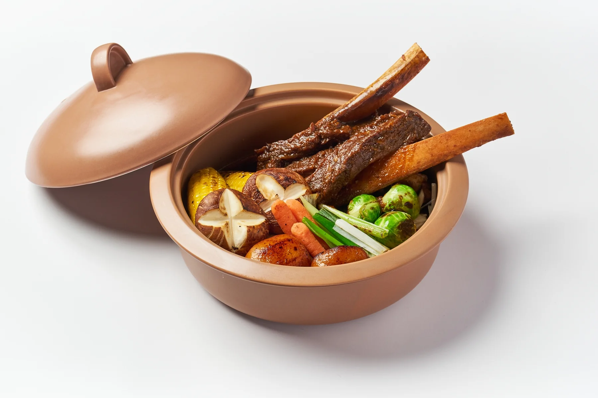
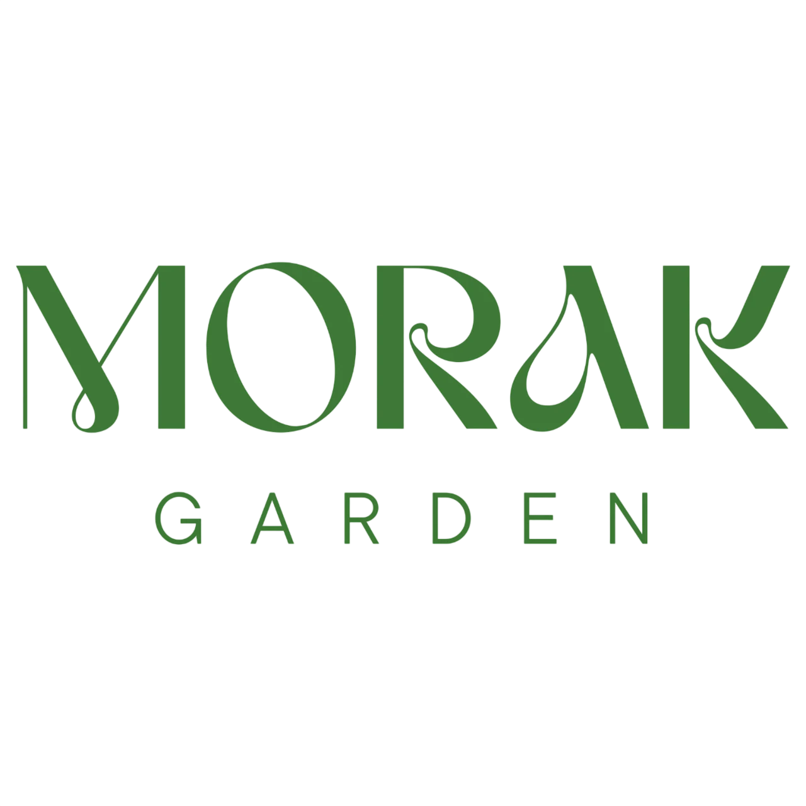
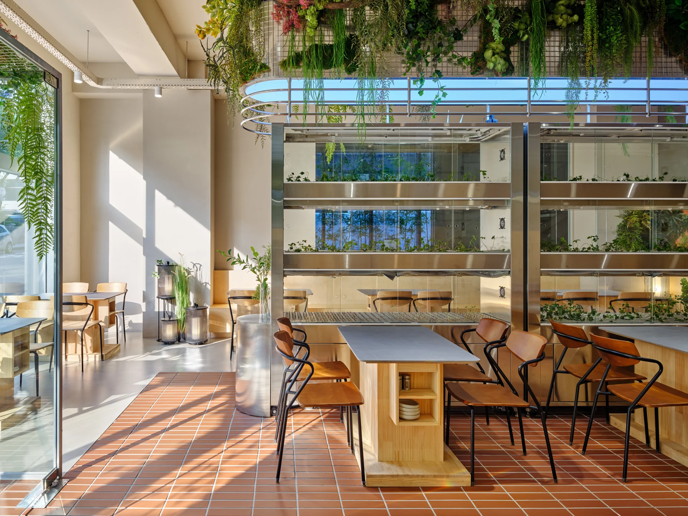
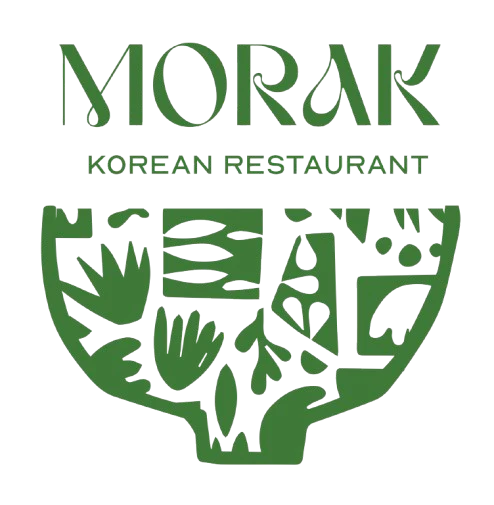

01
우대갈비찜
부드러운 우대갈비찜과 채소


한 그릇의 음식도 작은 정원이 될 수 있다는 생각.
모락정원은 푸른 채소와 다채로운 재료로
익숙한 한식을 색다르게 표현합니다.
맛있는 음식과 편안한 대화가 있는 자리.
우리의 정원은 식탁 위에서 시작됩니다.

OUR SPACE
FRANCHISE · MORAK GARDEN
한 접시의 한식부터 테이블에 앉는 순간까지.
모락정원은 음식과 공간이 함께 기억되는 레스토랑을 지향합니다.
익숙한 재료를 새롭게 담아낸 메뉴와 정갈한 플레이팅. 모락정원의 개성은 한 접시에서 시작됩니다.
나무의 질감, 식물의 싱그러움, 가구와 그릇의 조화. 공간의 디테일까지 모락정원다운 식사 경험을 만듭니다.
편안한 좌석과 세심한 응대, 잘 관리된 공간. 손님이 보내는 시간까지 소중히 생각합니다.
OUR PARTNERS
LOCATION & INTERIOR
점포를 검토할 때는 상권과 예산에 더해 레스토랑으로서의 공간 완성도를 함께 살펴봅니다.
현재 매장 사진은 브랜드의 공간 방향을 보여주는 예시입니다. 신규 점포의 룸·좌석 구성은 현장 조건에 따라 달라질 수 있습니다.
OPENING JOURNEY
가맹 개설을 검토할 때의 기본 흐름입니다. 세부 절차와 일정은 추후 안내합니다.
창업 방향·희망 지역·예산 정리
입지와 현장 조건 확인
비용·계약·운영 조건 검토
디자인·동선·설비 계획 구체화
조리·서비스·매장 운영 준비
영업 시작과 현장 운영 확인
INVESTMENT
임차 비용, 공간 공사, 주방 설비와 초기 운영비를 나누어 준비합니다.
총 투자금은 점포 상태와 공사 범위에 따라 달라질 수 있습니다. 임대 보증금·권리금, 별도 설비 공사와 초기 운영자금도 함께 검토해야 합니다.
SUPPORT & CONSULTATION
메뉴·레시피 교육, 공간 설계와 시공 관리, 식자재 공급, 오픈 준비, 운영·홍보 지원의 범위와 비용을 확인합니다.
본사 지원 프로그램의 세부 내용은 추후 작성 예정입니다.
공식 상담 연락처 · 추후 작성